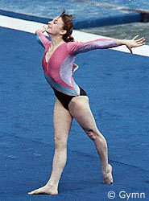

Iveta Polokova (CSSR)
|

|
|
Iveta competes on floor
at the 1990 American Cup. |
Iveta was born on August 17,
1970 in Frydek-Nistek. She trained at Sparta Prag with coaches Vera
Caslavska and Stanislav Vyzina. She is a veteran of four world
championships and two Olympics.
Competition Results
- 1985
- Belgian Gym Masters: 3rd AA, 4th FX, 6th UB
- Championships of Bohemia: 1st AA
- Chunichi Cup: 14th AA, 7th B
- European Championships: 20th AA
- Hungarian International: 2nd AA
- Intl. Mixed Pairs: 10th Team
- ROM-CSSR Dual Meet: 2nd Team, 7th AA
- Tokyo Cup: 4th FX
- World Championships: 5th Team, 10th AA, 4th
B
-
- 1986
- CSSR Championships: 3rd AA, 2nd V
- Kosice International: 4th AA, 1st B, 2nd V
- Kraft International: 4th AA, 2nd FX
- World Cup: 8th AA, 8th B, 8th FX
-
- 1987
- CSSR Nationals: 1st AA
- DTB Cup: 10th AA
- European Championships: 31st AA
- Kosice International: 6th AA
- World Championships: 11th Team, 21st AA,
8th B
-
- 1988
- CSSR Nationals: 5th AA
- European Cup: 11th AA, 3rd UB
- French International: 4th AA, 2nd UB, 2nd FX
- Hungarian International: 5th AA
- Kraft International: 4th AA, 1st UB, 2nd V,
- Olympic Games: 7th Team, 17th AA, 6th UB
- SUI-ROM-CSSR Tri-Meet: 5th AA
-
- 1989
- Catania Cup: 6th AA
- DTB Cup: 19th AA
- ROM-CSSR Dual Meet: 2nd Team, 4th AA
- World Championships: 12th Team, 35th AA
-
- 1990
- Athens International: 4th AA
- Chunichi Cup: 11th AA
- European Championships: 9th AA, 7th B
- Intl. Mixed Pairs: 18th Team
- Kosice International: 12th AA
- Medeco Cup: 8th AA
- ROM-CSSR Dual Meet: 2nd Team, 6th AA
- Tokyo Cup: 2nd B
-
- 1991
- World Championships: 14th Team, 30th AA
1992
Olympic Games: 58th (prelims)
This page was last updated on December 30, 2023.
© Gymn Forum